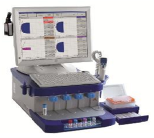
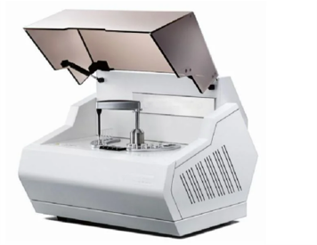

Tromboelastometria
A monitorização perioperatória da coagulação por tromboelastometria rotacional é importante para o diagnóstico de potenciais causas de hemorragia; guia de terapias hemostáticas; preditor de risco de sangramento durante procedimentos cirúrgicos; racionalização para a transfusão sanguínea; redução de complicações com hemocomponentes e monitorização de estados de hipercoagulabilidade (Crochemore et al, 2017).
 
Em um estudo realizado por um grupo hospitalar no Rio Grande do Sul, os insumos necessários para a realização da tromboelastometria variaram de R$96,00 a R$144,97. Os autores concluíram que o uso do tromboelastograma reduziu os custos e a necessidade de transfusão massiva e deram o parecer em favor da incoroporação do tromboelastograma ao arsenal terapêutico da rede.
Clique na tabela ao lado para expandir.